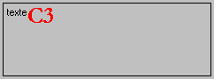
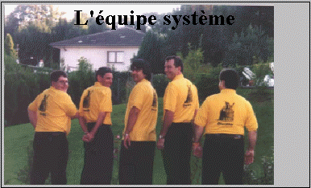
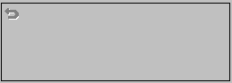
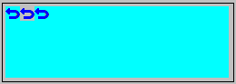

Les commandes images permettent de placer des images dans l'objet graphique. Si le nom de l'image ne comporte pas d'extension, cela signifie qu'elle doit être cherchée dans la feuille de styles. Sinon, il s'agit d'un nom de fichier.
<img>image
Affiche une image à la position courante.
Exemple :
ff.graph = "<t>texte<img>C3"

<imgf>image
Affiche une image de fond. L'image est toujours affichée à partir du coin en haut à gauche et n'affecte pas la position courante.
Cette commande peut-être précédée d'une commande <imga> pour spécifier un traitement à effectuer sur l'image de fond.
|
<imga>n |
pas d'action. |
|
<imga>rd |
réduire l'image pour qu'elle ne déborde pas. |
|
<imga>pb |
pleine boîte. L'image est étendue si nécessaire. |
|
<imga>pl |
pleine largeur. L'image est étendue jusqu'à remplir l'objet en largeur |
|
<imga>ph |
pleine hauteur. L'image est étendue jusqu'à remplir l'objet en hauteur. |
|
<imga>tm |
taille maximum. L'image est étendue au maximum mais en gardant ses proportions d'origine. |
|
<imga>mo |
mosaïque. L'image est répétée. |
|
<imga>c |
centrée. L'image est placée au centre. |
Exemple :
ff.graph = "<imga>tm<imgf>interlo1.bmp"
ff.graph &= "<P>grand<m>L'équipe système"

<imgg>o/n
Permet de griser l'image.
Exemple :
ff.graph = "<imgg>o<img>abandon"

<imge>o/n/g
Permet d'effectuer un traitement sur le fond de l'image
|
<imge>o |
La couleur du premier pixel est considérée comme étant la couleur de fond de l'image. Tous les pixels de cette couleur sont remplacés par la couleur de fond de l'objet graphique. |
|
<imge>n |
Pas de traitement. |
|
<imge>g |
La couleur grise (192, 192, 192) est remplacée par la couleur de fond de l'objet graphique. |
Exemple :
ff.graph = "<imge>o<img>abandon"
ff.graph &= "<imge>n<img>abandon"
ff.graph &= "<imge>g<img>abandon"

Remarque
Si dans un zoom, une entête de colonne de tableau contient des commandes graphiques, il ne faut pas oublier la commande <com>.